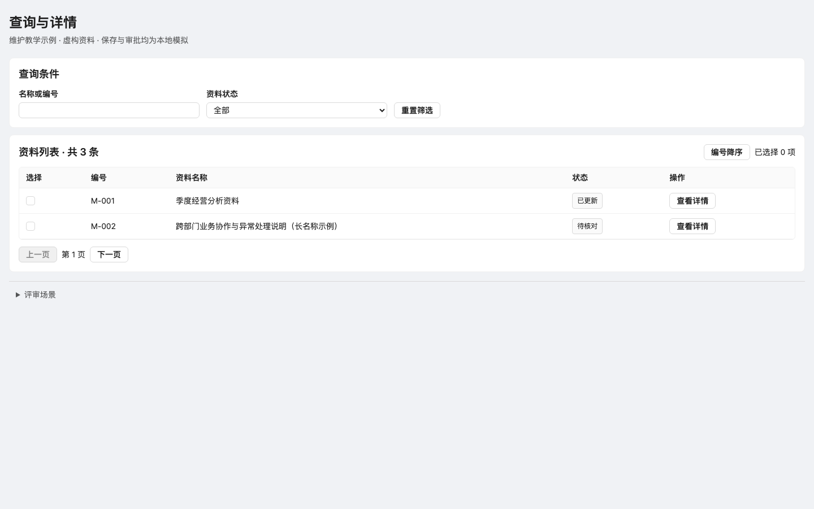

现有 DESIGN.md 命名变体 · shadcn/ui + React · 原生轻量路线共用
桌面控件 28px，窄屏 32px；正文 14px，标题 24/18px；桌面紧凑容器内边距 16px。项目颜色、圆角和交互态均通过 Token 映射。
既有页面可保留 comfortable 密度。生产 Vue/YSS 技术栈与主题默认值保持原合同。
此处是维护示例，所有资料与保存结果为本地模拟；前后对照不是 Agent A/B，也不表示用户批准。

实施与验证报告 · 同视口布局测量